Elementos HTML de multimedia
Desde hace algun tiempo los lenguajes web son lo bastante poderosos como para soportar contenido multimedia en sus diversos formatos, como lo son las imagenes, video, audio, e incluso es posible el incrustar secciones de otras paguinas dentro de otra, todos estos elementos y conceptos realionados son aborados a continuación:
Audio
-
Se trata de una etiqueta para reproducir audio en la pagina, se utiliza de una forma similar a la etiqueta video, Debido a las patentes que poseen algunos formatos de audio no todos los navegadores pueden aceptar los mismos formatos, en la actualidad son dos los formatos más utilizados en la industria, estos son: "mp3" y "ogg", de modo que para que el archivo de audio este disponible para casi todos los navegadores lo más recomendable es incluir el archivo en cuestión una vez por "mp3" y una vez por "ogg".
Para optimizar esto utilizamos el elemento "sourse", el cual se incluye dentro de la etiqueta "audio", usando el atributo "src" dentro de este, la función del elemento sourse es que el navegador pueda elejir el formato de audio que sea compatible con este, para esto usa el atributo "type", este atributo es leido por el navegador para ubicar el formato de audio que es compatible, si el atributo "type" no se incorpora el navegador probara cada elemto hasta encontrar en formato de audio que sea compatible, aumentando el tiempo de ejecución.
La etiqueta "audio" al tratarse de una etiqueta HTML5 existen navegadores que aún no estan capacitados para ejecutarla, por lo tanto la estuctura de esta etiqueta no solo debe de incluir los atributos de "src", si no que tambien a una etiqueta "p" con un mensaje de notificación, este parrafo sera bicible en aquellos casos en los que no sea posible ejecutar el archivos de audio, ya sea por un tema de compatibilidad o de conexión, por lo tanto es recomedable que este parrafo contenga un texto de notificación y si de verdad es muy necesario un enlace directo al archivo de audio en cuestión.
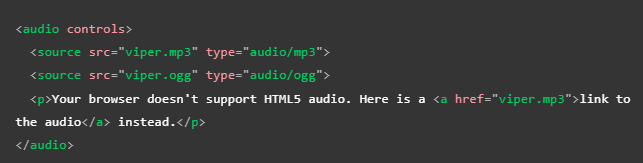Atributos
Autoplay: indica que el audio se reproduza utomaticamnte bien se cargue, no es muy recomendable su uso ya que los usuarios pueden encontrarlo molesto
buffered: Un atributo que se puede leer para determinar qué intervalos de tiempo del multimedia se han almacenado en búfer. Este atributo contiene un objeto TimeRanges (en-US).
Controls: Ofrece controles para que el usuario pueda controlar la reproducción
Muted: Hace que los medios se reproduzcan con el sonido apagado de forma predeterminada.
Loop: Hace que el audio comience a reproducirse cada vez que finaliza. Esto puede en ocasiones resultar molesto, por lo que lo mejor es utilizalo solo si es realmente necesario.
-
Preload: Le indica al navegador que inplementacion podria darle una mejor experienc al usuario, puede tener elguno de los siguientes valores:
- none: Le indica al navegador que el usuario no tendra que consltar el audio, y no sera necesario almacenarlo en cache
- metadata: Le indica al navegador que el usuariotendra que conslutar el audio, es rasonable almacenar los metadatos
- auto: Indica que el audio tiene proridad, es necesario descargarlo aun si el usuario no lo use
Si el preload no esta configurdo su balor sera definido por el navegador.
-
src: Indica la url del audio que se va a usar. Su uso es opciona ya que tambien se puede usar el elemento "sourse" dentro del bloque de audio para indicar el audio que se va a insertar.
Las compensaciones de tiempo se especifican como valores float que indican el número de segundos que se va a compensar.
Nota: los atributos autoplay y preload no fuerzan al navegador a seguir el valor del atributo, son solo una sugerencia.
Nota: los atributos width y height no tienen efecto en un elemto audio, ya que no hay un componente visual que estructurar.
Nota: En cualquier momento se puede restablecer al principo el elemento de audio con JavaScript, ubicando el elemento "sourse" por su id y asignando le la propridad "load()".
Incorporar subtitulos
Esto se realiza creando un archivo "WebVTT", este tipo de archivo esta creado con el fin de almacenar cadenas de texto junto con metadatos para indicar en que momento se mostrara cada cadena de texto e incluso información de estilo y posicionamiento. Las cadenas de texto se denominan señales y existen diferentes tipos con diferentes usos:
Subtitules (Subtitulos): Son traduciones de un lenguaje extrnajero usado en le video o audio
Captions (Leyendas): Son transcripciones de dialogos o sonidos significativos para que puedan ser entendidas en situaciones en las que no se puede encuchar el audio
timed descriptions (descripciones cronometradas): Texto para conversión a audio, para atender a personas con discapacidad visual.
Un ejemplo de la vista de un codigo WebVTT seria:
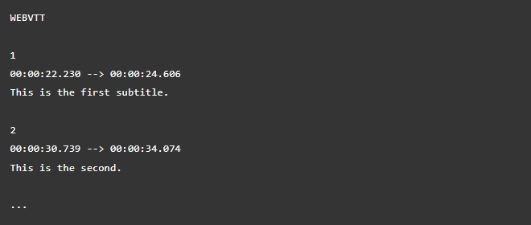Para que este archivo se muestre junto con la reproducción de mmedios HTML se debe:
Guardar el archivo ".vtt" en el lugar correcto
Enlazar el archivo ".vtt" con la biñeta "strack". La pista debe colocarse dentro de los elentos audio o video, pero después de todos los elementos de origen (sourse)
Usar la biñeta "kind para definir si el archivo se trata de subtitulos, leyendas o descripciones"
El siguiente es un ejmplo del codigo resultante
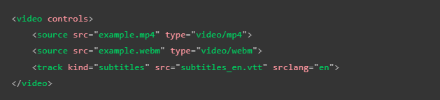Nota: en el ejemplo se usa un elemto "video" pero tambien se puede usar con uno "audio".
Nota: Se puede usar JavaScript para habilitar el boton de subtitulos, y elegir entre por ejemplo varios lenguajes.
Nota: Los navegadores se nutrenespecialmente del texto, eso incluye incluso a los suntitulos de un elemto multimedia, lo cual le permite al nevegador vincularse incluso con el fracmento del elemto multimedia que coincida con la busqueda.
Canvas
-
Se usa para crear graficos atravez de comandos javaScript, tambien se puede usar para crear animaciones y hacer composiciones de fotos, se trata de una etiquetabastante reciente asi que solo esta disponibles en verciones recientes de los navegadores.
Atributos
width: Se trata de la anchura del elemento, el valor predeterminado es de 300px
height: Se trata de la altura del elemento, el valor predeterminado es de 150px
Sobre Accesibilidad
El elemento canvas no provee ninguna información adicional sobre los elementos que tiene dibujados. El contenido de la etiqueta canvas no se muestra a los lectores de pantalla como otras etiquetas semánticas. Como regla general, deberías evitar utilizar canvas en un sitio accesible.
Embed
-
Representa junto con el elemento "object" una herramienta de incrustación de proposito general, en otras palabras se diferencia de "iframe" ya que "embeb" puede incrustar multiples tipos de contenido externo que incluyan tecnologuías de complemeto como Java Applets y Flash, en otras palabas puede ejecutar contenido externo y sus plug-in.
Nota: Un plug-in (complemeto) es un software que permite que el navegador ejecute un elemento con el cual no es compatible de forma nativa
En sí el "embeb" es una tecnologuía heredada por HTML5, no es verdaderamente usado ya que los subprogramas con plug-in no se utilizan desde hace algunos años, pese a esto se puede dar alguna sircunstancia de que se encuentre como puede ser en intranets o proyectos empresariales.
Atributos
Embed incluye los atributos globales
height: altura mostrada en px
width: ancho mostrado en px
src: La dirección URL del recurso que se está incrustado
type: El tipo MIME que se va a usar para la selección del plug-in para crear una instancia
Figure
-
Es una etiqueta HTML5, se trata de un contenedor con la función de vincular una aimgen con un texto de pie de imagen, cumple un roll semantico.
La forma de emplearlo consiste en que este elemto contenga en su interior el elemto "img" y el elemto "figcaptión".
Iframe
-
Esta etiqueta se utiliza para incorporar documetos web en el documeto actual, esto es bueno para poder incluir contenido de terceros sobre el cual no se tenga el control web dentro de la nuestra, por ejemplo de esto esta el siguiente video el cual pese a visualizarse en esta paguina realmete ningun elemto de este se encuentra en la paguina, en su lugar se tomo una sección directamente de la paguina de youtube y se inserto aquí de la siguente manera:
Primero que nada recordemos que youtube brinda la opción de incrustar videos en otras paguinas web muy facilmente atrabes de los siguientes pasos:
Primero nos diriguimos al video que deseamos incorporar
Luego hacemos clic en el boton "Compartir"
selecionamos la opción de "insertar", y se nos brindara un codigo HTML con la etiqueta "iframe" ya incorporada (podemos configurar algunas cosas sobre el como queremos que se visualise el video en nuestra paguina)
Copiamos el codigo y lo incrustamos en el archivo HTML deseado
El resultado es el siguiente
Google Maps tambien permite hacer algo muy similar, de la siguiente forma:
Bamos a Google Maps y buscamos el mapa que deseamos incorporar
Hacemos clic en el menú del la esquina superior izquierda de la paguina
Selecionamos "Compartir o insertar mapa"
Selecionamos la opciaón de "insertar", la cual noz dara un codigo HTML ya estructurado
Copiamos el codigo y lo insetamos en nustro archvo HTML para incorporarlo
Nota: Es muy importante tener en cuanta el tema de los derechos de autor al usar un "iframe", lo mejor es nunca mostrar contenido del que no se sea el propietario o el duejo brindado un consentimiento por escrito, en el caso de que el contenido sea licensiado se deben optener y cumplir los terminos de la licencia.
Atributos:
allowfullscreen: Si está configurado, el "iframe" se puede colocar en modo pantalla completa usando el Full Screen API
Frameborder: Al asignarle un valor de "1" añade un borde alrededor de todo el elemto incrustado, su balor minimo es "0", actualmete no es recomedable su uso ya que se obtiene el mismo o mejores resultados con CSS
Src: Al igual que en los elementos "video", "audio", "img" Contiene la ruta que apunta al documento a incrustar
Contenido de reserva: Al igual que un elemto "audio" o "video" el "iframe" incluye un texto que se mostrara en caso de que el navegador no soporte esta biñeta (actualmete es poco probable que se encuentre un navegador que no lo ejecute), se incorpora mediante un elemto "p" dentro de la etiqueta de apertura y de cierre del "iframe" (Suele contener un enlace al documeto que se pretendia insertar)
width: Define la anchura del elemento
height: Define la altura del elemento
sandbox: Este atributo solicita una mayor configuración de seguridad en el "iframe" (Requiere versiones de navegadores más recientes)
Nota: Es recomendable establecer el atributo "src" con JavaScript luego de que se carge el contenido principal para de esa forma la paguina la paguina se pueda usar antes y cargue de forma más rapida.
Seguridad
Los "iframe" son "Vectores de ataque" es decir objetivos de ataque de crakers, por lo tanto pudiesen llegar a ser vulnerabilidades en una paguina web, para esto se han desarrollado varios mecanismos y buenas practicas para hacerlos más seguros.
Configurar el Servidor: Una de estas practicas consiste en incluir en el servidor en el que albergue la paguina una configuración para evitar que la paguina sea incrustada en "iframe" ya que de esta forma se evita que se robe el contenido de la paguina y otros lo reclamen como propio o que inserten el sitio web en una paguina maliciosa para robar información del usuario, sin mencionar que el costo del ancho de vanda consumido por ejecutar el "iframe" correria por parte de la paguina que esta siendo insertada.
Aplicarlo solo si es necesario: Ya que los "iframes" representan un sierto riesgo siempre es bueno limitar su uso a solo aquellos casos en los que sea necesario su implemetación.
Usar HTTPS: HTTPS es la verción encriptada de HTTP, pese a su costo se deberia de incorporar a la paguina web siempre que sea posible, ya que brinda dos grandes ventajas:
- Reduce las posivilidades de que el contenido remoto sea manipulado mientras se encuentra en transito
- Impide que el contenido manipulado acceda al contenido padre y viceversa
Nunca se deberia de insertar contenido de terceros mediante el HTTP, debido al gran peligro que conlleva, una buena solución es GitHub pages el cual permite usar HTTPS por defecto, por lo tanto no es necesario tramitar el sertificado de seguridad
Siempre usar el atributo "sandbox": Basicamente consiste en brindarle al elemto y su contenido unicamnte los permisos necesarios para hacer su trabajo, un contenido sin restricciones puede hacer muchas cosas como por ejemplo ejecutar JavaScript, es por eso que se restringe la funcionalidad del elemto y su contenido para reducir las opciones de un craker, El atributo "sandbox" por defecto aplica todas las restricciones posibles al elemento "iframe" pero de ser necesario se pueden volver a conceder permisos uno por uno.Un recordatorio de seguridad importante es nunca conseder el permiso de allow-scripts como allow-same-origin ya que estos eventos pudiesen saltarse las medidas de seguridad y ejecutar Scripts para desactivar el "sandbox" por completo
Nota: sandbox no evita que un usuario pueda ser engañado por contenido malicioso, si existe alguna posibilidad de que el contenido pudiese ser malicioso lo mejor es publicarlo desde un dominio diferente al principal
Configurar directivas CSP: Esto es con exactitud la configuración de servidor que se nombro con anterioridad, consisten en programar un envio de encabezados HTTP (metadatos) para evitar que la paguina web se presente en un iframe
Nota: Una buena regla de oro para la seguridad web es "Nunca puedes ser demasiado cauteloso. Si lo hizo, verifíquelo de todos modos. Si alguien más lo hizo, asuma que es peligroso hasta que se demuestre lo contrario".
Img
-
Esta etiqueta tiene la función de vincular archivos de imagen para que se visualicen en la paguina, para esto se utiliza el atributo "src".
Atributos
src: lugar en el que se almacena la URL del archivo de imagen
width: Define el ancho en la imagen
height: Define el alto en la imagen
alt: Se trata de un texto alterno que describa la imagen, se usa en aquellas situaciones en las que la imagen no pueda ser mostrad, por ejemplo si existe algun error en la carga de las imagenes, o si se utiliza algun motor de lectura en la paguina
title: Asigna un titulo a la imagen, sin embargo no es muy utilizado ya que unicamnete muestra el titulo si se posiciona el raton sobre la imagen, a la ves que puede causar errores en los motores de lectura
Nota: Los motores de busqueda tienen en cuenta el texto alternativo al realizar alguna, pueden hacer coincidir la busqueda con este texto
Nota: Desactivar las imagenes es una actividad común en lugares con poco ancho de banda o un costo de internet muy alto, en estos casos el "alt" es muy utli
Nota: Normalmente se utiliza el width y el height en css, sin embargo si se usa en html, la paguina recervara el aspacio asignado para la imagen aun si esta aun no a termanado de cargar
Imagenes Adaptables
En la web existen dos tipos de formatos de imagen, los vectoreales y los rasterizadas estas ultimas son los formatos como png y jpg los cuales consisten en codigo que le idica al navegador la posición de cada pixel que conpone la imagen, por ello es que la imagen se puede distorcionar cuando se altera el tamaño o proporción de esta, ya que el navegador seguira esta estructura sin importar que, empezara a hacer ajustes para seguir cumpliendo con eta estructura.
Debido a esto es que el como se aprecie una imagen en nuestra paguina se vera enormemente determinado por el dispositivo del que se ingrese y por lo tanto por el tamaño de la pantalla de este, por ejemplo en si agrandamos una imagen para que cumpla con un tamaño adecuado para visualizarse desde una gran pantalla es muy probable que esta pierda calidad y se pixele, por otro lado si tomamos la misma imagen y la reducimos hasta poder visualizarla adecuadamente en un telefono movil es probable que al ser tan pequeña no podamos apreciar adecuadamente el contenido de esta.
A esto es que se refiere una imagen adaptable, se trata de ajustar la imagen al tamaña en el que sera visualizada, para ello la solución que se encontro consiste en incorporar varias imagenes en un elemto img cada una editada para visualizarse adecuadamente en un diferente radio de pixeles, por defecto este solo permite vincular una imagen por uso, debido a esto existen los atributos "srcset"y "sizes".
- srcset: Define el conjunto de imagenes y su tamaño que el navegador podria eleguir segun el cual sea la más conveniente para el dispositivo, la estructura para separar cada conjunto de información es con una coma, cada conjunto de información esta compuesto por:
El nombre del archivo de imagen
El ancho intrinseco de la imagen en pixeles, este sera el tamaño real de la imagen, es importante tener en cuenta que se utiliza la unidad "W" no "px" como en otros casos
- Size: Define el conjunto de condiciones de medios en los que se muestra cada imagen, por ejemplo el ancho de la pantalla, por lo tanto define en que hancho de pantalla seria correcto mostrar cada imagen, esta compuesto por:
La condición de medios en la que se indica mostrar cada image por ejmplo: (max-width: 600px)
El ancho que finalmente ocupara la imagen cuando la condición de medios se cumpla, por ejemplo: (440px.), por lo general esta se define como menor al ancho de la pantalla para no afectar la experiencia del usuario
EL siguente es un ejemplo de codigo, se puede apresiar que el ultmo conjunto de datos en el atributo "size"no posee condición de medios, esto se debe a que es el caso por defecto que se utilizara si ninguno de los casos anteriores se cumple, es importante tener en cuanta que el orden de los elemtos ya que el navegador eleguira el primer caso que sea compatible e ignorara todo lo que este posterior a este.
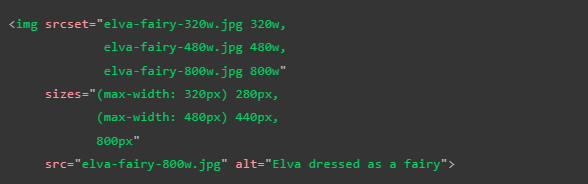En este codigo el navegador hace lo siguiete:
Verifica el ancho del dispositivo
Buscara la primera condición de medios que se cumpla
Verificara la medida dada a la imgen en esa consulta de medios
Cargara la imagen en el atributo "srcset" que mejor coincida con la medida asicnada para la imagen
Los navegadores desactualizados que no soporten esta caracteristica simplemete la ignoraran y continuaran con la carga comun del atributo "src".
Una imagen en disco de 480px simepre tendra un tamaño mucho menor que una de 800px de ese modo se puede ahorrar ancho de banda y tiempo decarga al iniciar la paguina web.
Nota: Nota: Algunos dispositivos moviles mienten sobre el ancho de su pantalla lo cual no es muy util para diseños receptivos, incluyendo (meta name="viewport" content="width=device-width") entre los metadatos de la paguina los abligas a utilizar su ancho real.
Cambiar la resolución de la imagen
Otra forma de mejorar el consumo de ancho de banda así como el tiempo de carga de nuestra paguina es el de ofreser como opción al navegador la misma imagen pero con diferentes resoluciones, para esto se utiliza un metodo similar al anterior, es decir se utiliza el atributo "srcset" haciendo referencia a multiples imagenes, con la diferencia de que en esta ocación el tamaña en pixeles de las imagenes no es diferente, si no que se diferencia entre sí por la calidad de cada una.
Esto se realiza con la intención de que el navegador detecte la resolución a la que esta trabajando el computador y selecione la imagen acorde a esta, por lo tanto si el computador esta configurado con una resolución alta el navegador seleccionara una imagen con buena resolución, por otro lado si la configuración es para una resolución baja el navegador seleccionara la imagen con menor resolución, esto cobra sentido cuando tenemos en cuenta el espacio en memoria de cada imagen, ya que mientras mayor resolución mayor sera el peso de la imagen, de este modo podemos buscar la eficiencia de recursos cargando solo los que sean necesarios en base al dispositivo desde el que se ingrese, un ejemplo de este codigo seria el sigueite:
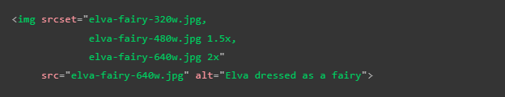 Figure y Figcaption
-
Se trata de elemtos para indicar que un texto esta binculado con una imagen(pie de imagen), se trata de elemtos con valor semantico para el uso de leectores de pantalla o motores de busqueda.
La forma de emplearlo es que junto al elemto de imagen ("img") este contenido en un "figure" y el elemento "figcaption" conteniendo el contenido del pie de paguina, de la siguiete manera:
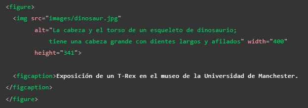En este ejemplo el elemento "figcaption" dice al navegador, o a alguna tecnología de apoyo, que el texto que contiene describe la imagen que está contenida en el elemento "figure".
Nota: Desde el punto de vista de la accesibilidad, los pies de imagen y el texto alternativo (Atributo "alt") cumplen funciones diferentes. Los pies de imagen benefician incluso a quien puede ver la imagen, mientras que el texto "alt" proporciona la misma función en una imagen ausente. Por tanto, los subtítulos y el texto "alt" no deberían decir lo mismo, porque ambos aparecen si la imagen no se muestra.
Nota: Un elemento figure podría contener varias imágenes, un trozo de código, audio, video, ecuaciones, una tabla, o cualquier otra cosa no exclusibamente imagenes
Object
-
Representa junto con el elemento "embed" es una herramienta de incrustación de proposito general, en otras palabras se diferencia de "iframe" ya que "object" puede incrustar multiples tipos de contenido externo que incluyan tecnologuías de complemeto como Java Applets y Flash, en otras palabas puede ejecutar contenido externo y sus plug-in.
Nota: Un plug-in (complemeto) es un software que permite que el navegador ejecute un elemento con el cual no es compatible de forma nativa.
En sí el "object" es una tecnologuía heredada por HTML5, no es verdaderamente usado ya que los subprogramas con plug-in no se utilizan desde hace algunos años, pese a esto se puede dar alguna sircunstancia de que se encuentre como puede ser en intranets o proyectos empresariales.
picture
-
Se trata de un elemto contenedor al igual que "audio" y "video", que contiene varios elemtos de origen los cuales proporcionana varias fuentes diferentes para que el navegador elija entre ellas, este elemto se utliza para volver las imagenes en elemtos responsive, la estructura del elemto es la siguiente:
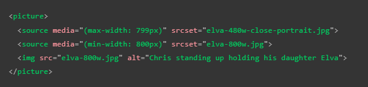Como se puede observar el elemto "picture" esta compuesto por varios elemtos "sourse", de los cuales cada uno llama a una imagen alternativa a disposición del navegador, estos elemtos contienen el atributo "media" el cual define las condiciones de medios bajo las cuales se ejecuta cada imagen alternativa, así como tambien poseen el atributo "srcset" el cual contiene el llamado al archivo de imagen edecuado para esas condicones de medios.
En todo caso siempre es necesario incluir el elemto "img" antes del cierre del elemto "picture" esto ya que brinda el "medio" en el cual se mostraran las imagenes así como tambien actuara como un recurso alternativo para aquellos casos en los que algun navegador no sea conpatible con el elemto "picture".
Para crear images responsive no se puede utilizar JavaScript, esto es ya que lo primero que el navegador carga el HTML, eso incluye las imagenes, si hacemos que se analise el ancho de la pantalla con JavaScript o CSS para cuando estos sean interpretados las imagenes ya estaran siendo cargadas, por lo tanto seria igual a seleccionar cual elemto se utilizara luego de averlo descargado, en este caso se produsiria una sobrecarga de los elemetos, este seria el peor de los casos para una elemto responsive.
Tambien podemos usar el elemto "picture" y el elemto "sourse" de una forma más tradicional para los navegadores antguos, la cual es utilizando los atributos lo atributos "type" "size" por ejemplo:
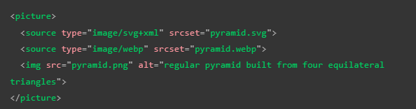Algunas cosas a tener en cuanta son:
El atributo "media" solo se utiliza si se necesita crear imagenes responsive
En el elemento "sourse" solo se puede referenciar imagenes del tipo definido en "type"
Tambien se puede crear listas de referencias de elemtos en los atributos "srcset" y "sizes" separando los conjuntos de datos con una coma
Nota: recordar que el computador simplemete elejira el primer elemto que arroje un verdadero, por lo que la posición de los elemtos es importante.
Nota: Tambiens hay que recordar que el atributo "srcset" puede referenciar varias imagens e incluso un atributo de tamaño por lo que se pudiera ofreser un conjunto de imagenes de varios tamaños e incluso diferentes resoluciones, sin embarrgo siendo realistas es poco probable que sea necesario hacerlo.
Nota: Cuando utilice "media", no ofrezca también condiciones de medios dentro del atributo de "size"
Video
-
La etiqueta video fue incorporada en HTML5 por lo que no esta disponible en verciones antiguas de los navegadores así como en aquellos que esten basados exclusivamente en el texto. Esta etiqueta permite incorporar videos facilmente en la paguina, la estructura de este elemto es:
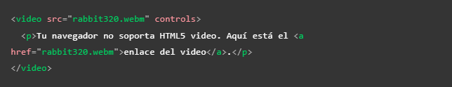En este ejemplo se puede apreciar el "contenido de reserva", se puede estrucutrar de la forma que se desee pero en este caso se trata de un enlace que dirigira al usuarios hacia el video original para que pueda visualizarlo en algun reproductor web como youtube, la forma de incorporar esto es con un enlace ubicado en el interior del elemento "video", con la caracteritica de que se mostrara al usuario unicamente en los casos en los que el navegador no sea compatible con los elemetos HTML5 de "video".
Atributos
Posee diversos atributos, algunos de los cuales son exclusivos de este elemto:
srl: Aligual que en otras ocaciones en este se almacena la ruta al archivo de video a reproducir
Controls: Este elemto es exclusivo de el elemento "video", indica al navegador que se deven de incluir la interfaz de control de video del navegador, tambien se puede usar para crear una propia usando javaScript
El parrafo dentro de la etiqueta Video: Se mostrara en aquellas situaciones en las que el navegador no soporte la etiqueta "video"
width: Define el ancho del recuadro de video en la paguina
Height: Define el alto del recuadro de video en la paguina
Autoplay: Indica una reproducción automatica del elemto mientras la paguina se carga, no es muy recomendable usarlo ya que los usuarios pueden encontrarlo molesto
Loop: Hace que el vídeo (o audio) comience a reproducirse cada vez que finaliza.Esto tambien puede llegar a resultar molesto para los usuarios
Muted: Hace que los medios se reproduzcan con el sonido apagado de forma predeterminada
Poster: La URL de una imagen que se mostrará antes de reproducir el vídeo. Está destinado a ser utilizado para la miniatura del vídeo
-
Preload: Se utiliza para almacenar en memoria los archivos grandes; Puede tomar uno de estos tres valores:
None: no almacena el archivo en el búfer
Auto: almacena el archivo multimedia
Metadata: almacena solo los metadatos del archivo
Compatibilidad
Ya que se esta incluyendo elemtos multimedia a la paguina entra en bigor un tema basteante importante, el cual es: el formato del elemto. Este es un aspecto indispensable al incorporar videos a una paguina web, esto devido a que existen varias formatos de audio y video, así como varias formas de reproducirlos, por ello dependiendo del navegador que se utilice algunos de estos pueden no ser compatibles, esto puede originar que segun cual sea el formato del elemento que se este incorporando en la paguina este no podra ser visualizado en algunos navegadores.
Esta discrepenacia entre los navegadores se debe a que algunos de los formatos de audio y video estan sujetos a patentes, lo que imposibilita su empleo en aquellos que no se encuentren autorizados, por lo tanto estos navegadores recurren a formatos alternos que les brinden desempeños similares.
A la hora de implemetar un video en la paguina existen en la actualidad dos formatos establecidos: el formato "mp4" (principalmente soportado en Internet Explorer y Safari. ) y el formato "webm"(principalmente soportado por Firefox y Chrome), ya que cada uno sunciona en algunos navgadores y en otros no.
Lo recomendable es que al incororar un video en una paguina web es que se incorpore el elemento una vez por cada formato dentro de la etiqueta "source", es decir se utiliza dos veces el elemento "sourse" con el atributo "srl" en su interior, una ocación para el elemento en formato "mp4" y otra para el elemto en formato "webm" de la siguiente forma:
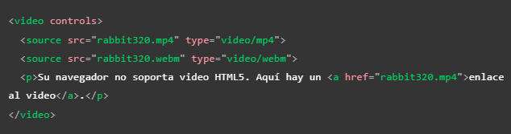Esto ya que el elemento "sourse" apunta a la propia fuente del navegador, por lo tanto el navegador elejira el primer formato que este soporte, el elemento "source" tambien cuanta con el atributo "type", al cual le indica al navegador el formato en el que se encuentra cada elemto, al navegador puede leer este atributo y de este modo omitir los formatos no compatibles ejecutando solo los que sea capaz reproducir ahorrando de este modo recursos y tiempo, con la implemenntación de estos dos formatos el video deveria de poder ser ejecutado en casi todos los navegadores.
Nota: Como mínimo la interfaz debe incluir una manera de empezar y terminar la reproducción, y ajustar el volumen.
Incorporar subtitulos
Esto se realiza creando un archivo "WebVTT", este tipo de archivo esta creado con el fin de almacenar cadenas de texto junto con metadatos para indicar en que momento se mostrara cada cadena de texto e incluso información de estilo y posicionamiento. Las cadenas de texto se denominan señales y existen diferentes tipos con diferentes usos:
Subtitules (Subtitulos): Son traduciones de un lenguaje extrnajero usado en le video o audio
Captions (Leyendas): Son transcripciones de dialogos o sonidos significativos para que puedan ser entendidas en situaciones en las que no se puede encuchar el audio
timed descriptions (descripciones cronometradas): Texto para conversión a audio, para atender a personas con discapacidad visual
Un ejemplo de la vista de un codigo WebVTT seria:
Para que este archivo se muestre junto con la reproducción de mmedios HTML se debe:
Guardar el archivo ".vtt" en el lugar correcto
Enlazar el archivo ".vtt" con la biñeta "strack". La pista debe colocarse dentro de los elentos audio o video, pero después de todos los elementos de origen (sourse)
Usar la biñeta "kind para definir si el archivo se trata de subtitulos, leyendas o descripciones"
El siguiente es un ejmplo del codigo resultante:
Incrustar imagenes vectoriales
-
Existen dos tipos de imagenes las rasterizadas es decir todos aquellos formatos comunes com png, jpg y bmp estas estas compuestas por codigo que le indica al computador el donde va cada pixel, este codigo permanecera sin cambio sin importar el tamaño de la imagen por ello al agrandarla se empezara a "pixelear" y ver se borroza, esto ya que el navegador debe de compensar el lugar de cada pixel de la imagen.
El segundo tipo son las imagenes vertoreales, estas estan compuestas por algoritmos que definene la forma y ruta de esta, por lo tanto estos algoritmos pueden ser interpretados por el navegador para definir el como deberia de verse la imagen, podiendo de este modo adaptar la imagen a cambios de sus dimenciones sin que la nitidez de esta se vea afectada. otra caracteristicas es que las imagenes vectoriales son mucho más ligeras que sus contrapartes ya que en vez de contener la inforación de cada pixel solo necesitan contener los algoritmos de esta, El formato en el que se encuentran todas las imagnenes vectoreales es el SVG.
SVG
-
Se trata de un lenguaje marcado (al igual que HTML) el cual contiene numerosos elemtos para definir las formas que se desean que aparezcan en las imagenes, por lo tanto SVG unicamente esta pensado para marcar graficos, no contenido por ello todos sus elemtos y atributos van enfocados a esto.
El siguente es un ejemplo de codigo y su respectivo resultado:

Puede parecer que el SVG es facil de codificar sin embargo al tratarse de imagenes complejas deja de ser viable el hacerlo a mano, por ello muchas veces se utilizan editores de graficos vectoreales como Inkscape o Illustrator los cuales permiten utilizar heramientas graficas para por ejemplo crear aproximaciones a fotos..
Otras de sus caracteristicas positivas son:
El texto de las imagenes seigue siendo accesible para los motores de busqueda lo que es positivo para el CEO de la paguina
Puedn integrarse muy bien con el estilo de la paguina ya que cada elemto de la imagen es un elemtoal que se le puede dar CSS o scripting atravez de JavaScript
Sin embrago tambien cuanta con ciertas desventajas como:
El codigo puede complicarse rapidamente por que el tamaño y peso de los archivos se vuelve un factor a tener en cuenta, sin mencionar que tambien puede requerir un tiempo de procesamiento considerable
Pueden llegar a ser más dificiles de crear que las imagenes rasterizadas segun cual sea el tipo de imagen que se quiera crear
No es compatible con verciones antiguas de los navegadores
Por estas razones los graficos rasterizados son mejores para imagenes de presición como las fotos, aún así se puede leer este articulo para preparar SVG para la web.
Agregar SVG a la paguina
Existen tres formas de hacer esto las cuales son:
-
Incluirlo en un elemto "img"
Esta es la forma más rapida de hacerlo, para esto solo se necesitaria los atributos de width Height para delimitar el tamaño en el caso de que no posea una relación de aspecto inherente
Ventajas
Sintaxis simple con el texto aquivalente en el atributo "alt"
Se puede convertir la imagen facilmente al incluir el "img" dentro de un "a"
El navegador puede almacenar el SVG en la cache lo que resulta en tiempos de carga más rapidos para las paguinas que usen la imagen
Contras
No se puede manipular la imagen con JavaScript
Si se desea incorporar CSS a la imagen se debe de incluir en el codigo SVG de otra forma no tendra efecto
No puede cambiar el estilo de la imagen con pseudoclases CSS (como :focus).
Compatibilidad con verciones anteriores de los navegadores
Ya que las imagenes vectoriales (SVG) solo son ejecutables en verciones recientes de los navegadores, por lo tanto en aquellos casos en los que el usuario acceda a la paguina desde uno desactualizado este no podra visualizar los archivos SVG por ello para exitar que la experiencia del usuario se vea afectada existe una forma de solucionar la compativilidad con estos casos,
Para los navegadores que no admiten SVG lo recomendable es hacer referencia a una imagen rasterizada como png o jpg y usar el atributo "srcet" para hacer referencia al archivo SVG, ya que solo los navegadores actualizados reconocen este atributo seran capases de visualizar adecuadamente la imagen SVG mientra que los que no visualizaran la imagen rasterizada, el codigo resultante seria el siguiente.
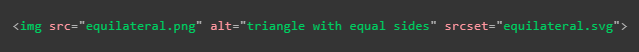Tambien se puede incorporar una imagen SVG como imagen de fondo del sitio web usando la tactica de compatbilidad expuesta anteriormente sin embarogo al hacerlo esta sujeta al mismo tipo de restricciones, esdecir no podra ser manipulado por JavaScript y podra interactuar de forma limitada con el CSS, el resultado seria el siguiete.

Nota: Si las imagenes vectoriales no se visualizan el el sitio web pudiese deberse a que el servidor no esta configurado correctamente para ejecutarlas.
-
Incluir el codigo SVG en el documento HTML
Otra forma de incluir imagenes SVG en nuestra paguina es incluir el codigo SVG directamente en nuestro documemto HTML, para esto se utiliza la etiqueta "svg", dentro de esta se debe desarrollar todo el texto SVG, ya que seria una mala practica intentar incluirlo fuera de esta, al implemetarlo de esta forma se dice que se esta utilizando SVG en linea; a continuación se muestra un ejemplo de codigo.

Ventajas
Incluir el codigo SVG directamente en el documento HTML ahorra un llamado HTTP por lo que el tiempo de carga se ve un poco reducido
Se puede implemetar el CSS en plenitud, se puede añadir clases e identificadores a los elemtos, De hecho, puede utilizar cualquier atributo de presentación SVG como propiedad CSS
Usar el SVG en linea es la unica forma en la que se pueden usar interacciones y animaciones CSS en la imagen SVG
Puede usar el elemto SVG como hipervínculo envolviendolo por un elemto "a"
Desventajas
Este metodo solo es oportuno si se utiliza el SVG en un solo lugar, ya que la duplicación hace que el mantenimineto requira muchos recursos
El codigo SVG aumneta el pamaño del codigo HTML
Con este metodo de inclusión el navegador no pogra almacenar la imagen SVG en la cache, por lo que no se se podra aguilizar las cargas futuras del elemto
Se puede incluir un respaldo en un objeto "foreignObject" para aquellos navegadores obsoletos que no puedan aceptar la imagen SVG, sin embargo los navegadores modernos tambien descargaran la imagen de respaldo por lo tanto es necesario analizar si es necesario probocar esa sobrecarga solo para incluir los navegadores desactualizados
-
Incrustrar el SVG en un elemto "iframe"
Esta es la tercera forma de incluir el SVG en la paguina, aunque definitivamente no es la mejor forma de hacerlo, para plicar este metodo se utiliza un "iframe de forma comun, haciendo referencia al archivo SVG y incluyendo un elemto "img" con una imagen rasterizada para mostrar en aquellos casos en los que el navegador no acepte la viñeta "iframe" de la siguiente forma.
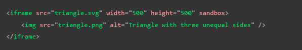Desventajas
Los "iframes" incluyen un respaldo que se muestra en caso de que la biñeta no pueda ser ejecutada por el navegador
A menos que el elemto SVG y la paguina tenga el mismo origen(ruta) no se puede usar javaScript para manipular la imagen